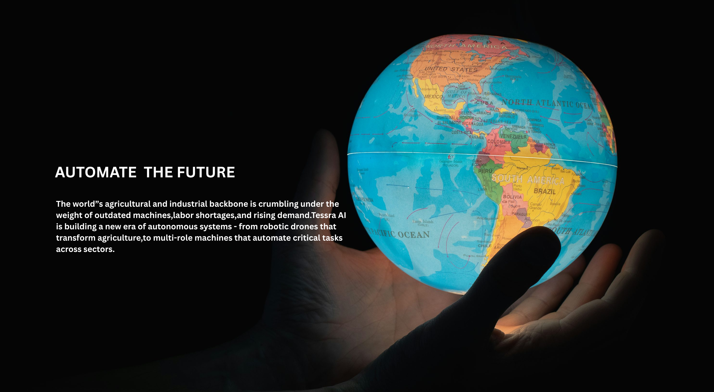

Tessra is the first-of-its-kind AI
automation company bringing a
general purpose humanoid to life.
Our Mission
Transforming robotic
capabilities with advanced
technology.


Aeros Voyager
Aeros Advanced Multi-Tasker Rover (AMR)
Aeros is a versatile, reusable Autonomous Ground Robot with modular manipulators and AI navigation, capable of handling diverse industrial, commercial, and household tasks.
Learn More About Aeros Voyager →AEROS
Robots autonomous performing complex industrial tasks with precision and efficiency.
READ MORE

HV-25
Robotic hand autonomous handling tools, food, and industrial processes.
READ MORE

APEX
Drones autonomous covering farms, spraying crops, and mapping fields.
READ MORE


Careers
Join us in creating
the future of
robotics.
From light bulb to functional prototype in a week.
A team rallying around a shared intention to make a
positive impact by creating a safer world. That's life
at Tessra AI.